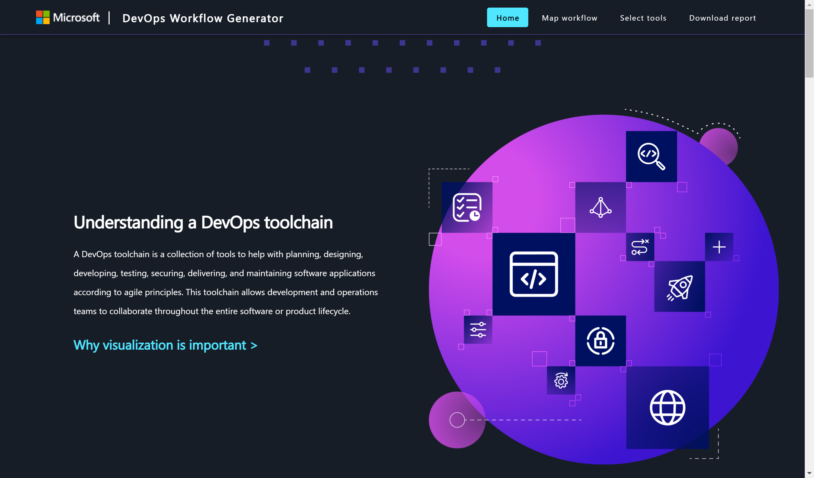
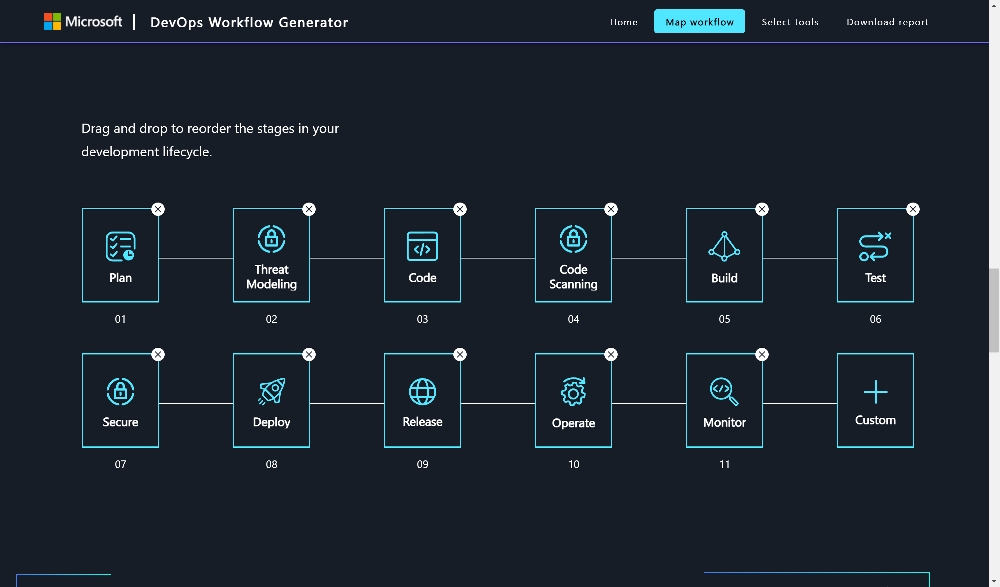
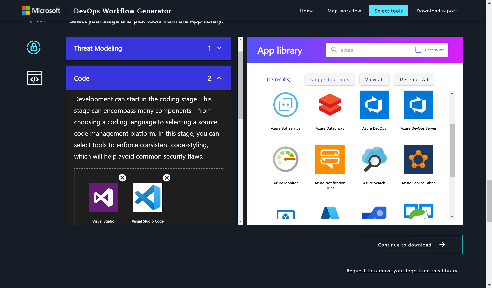
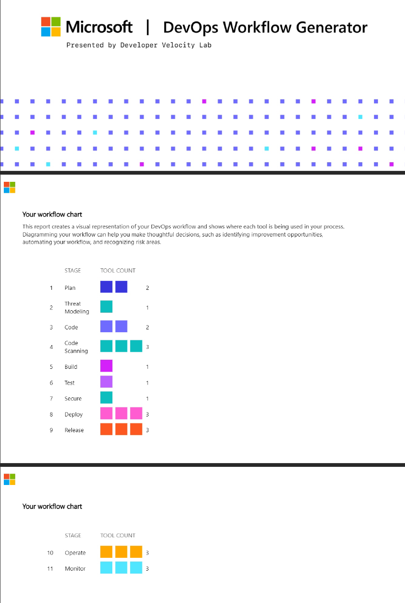
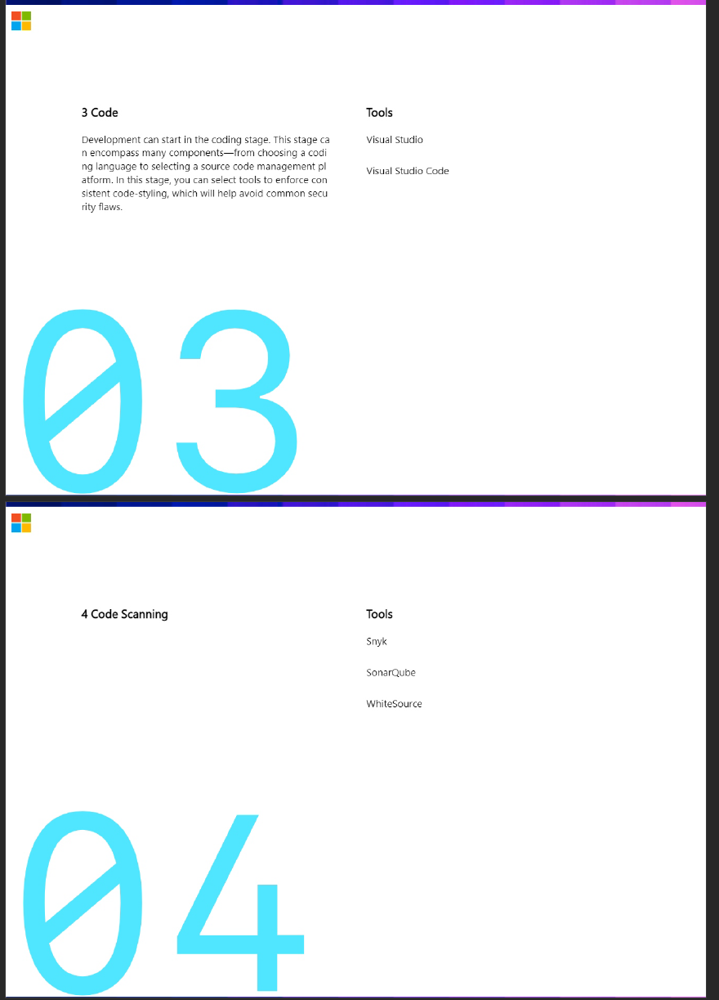

Hey awesome people,
For the ones who know me, it shouldn’t be a surprise I’m interested in DevOps, mainly using Azure DevOps and GitHub as core technologies, as well as several side-solutions that integrate with them. So when I heard about the DevOps Workflow Generator, a new free tool from the Microsoft Research Lab division, I wanted to give it a spin.
The Concepts of DevOps
DevOps according to Microsoft’s Definition: The Union of People, Processes and Products, to enable continuous delivery of value to the business

The tricky part with DevOps is that it’s not just about 1 team using a single tool, but potentially a complex group of people (the DevOps engineering team), using a multitude of tools and solutions to perform their role. Obviously the main DevOps pipeline engine (Azure Pipelines, GitHub Actions, Octopus Deploy, Jenkins, GitLab, etc…), but most probably, it also involves Infrastructure as Code tools such as Terraform, Azure Bicep or ARM Templates, Configuration as Code tools like PowerShell DSC, Ansible, Chef or Puppet, as well as DevSecOps tools where Snyk, Aqua, SonarQube, WhiteSource bolt and Veracode are just some of the popular ones. (Btw, if you missed my recent post on integrating DevSecOps by Shifting Left, which I wrote for Azure Spring Clean, you can find it here)
When to use what
If you went to the Azure Spring Clean post I referred to earlier, you now know that DevOps is relying on a lot of tools. I’m not saying it’s the most important aspect, but without tools, there is no DevOps. Period.
So coming back to the DevOps Workflow Generator, it literally helps organizations, and their DevOps teams, to get a clearer view on what the DevOps process is about, as well as what different tools are being used in each and every phase. You might ask, what’s the point in that.
Well, let me tell you. Since DevOps is more about the culture than the tools, the better view your team has on what tools are being used, the better the team will operate. Apart from bringing - what’s traditionally 2 separate worlds - Developers and Operations teams together, there might actually be a sub-project as part of the DevOps adoption, to try and unify the tooling that is being used. Let’s say Developers are OK with using Visual Studio, or maybe Visual Studio Code. Where Operations folks are probably also using Visual Studio Code, in favor of Visual Studio. This might lead to an agreement that from now on, Visual Studio Code is a standard tool across the DevOps team. Maybe even sharing extensions (ARM Templates, Docker, Kubernetes, Bicep, Azure,…) are just some of my favorites.
How to use the DevOps Workflow Generator
You most probably don’t need my help from this blog post to find out how the Workflow Generator is working, it’s really that easy to use. However, after a first quick look, I went back (in preparation to write this article) and actually discovered some new things. So hopefully there is still something useful for you to discover:
- From the top menu, select Map Workflow
This presents you with a rather generic/standard DevOps workflow process; which at first, was what I used. Until I discovered you can actually make customizations to it. Following my own best practices - Shifting Left - I added some of the process steps as outlined in the referred article earlier. The updated workflow looks like this now:

- Next, move over the Select Tools step in the top menu. This allows you to select DevOps solutions and tools (single or multiple) for each cycle in your DevOps Workflow. And the list is extensive…!

- Once all tools have been mapped with each phase, it’s time to compile a report, by navigating to the Download Report menu option.
The outcome presents a nice-looking PDF document, which looks like this:


Pretty cool, right?
Summary
In this article, I wanted to introduce you to DevOps Workflow Generator , a free tool by Microsoft Research Labs, allowing DevOps teams to get a better view on their DevOps process(es), as well as highlighting the different solutions and tools used for each phase of the DevOps process.
Have a look at it, and let me know your thoughts!
If you liked this article, consider giving back a small token of appreciation:

Peter